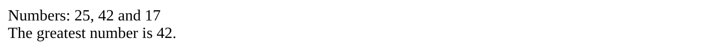

Write a PHP code to find the greatest number of any three given numbers using nested-if.
Program 3.4: Finding the Greatest of Three Numbers Using Nested if
Concepts used
Nested if-else, the comparison operator >=, handling equal values.
Test data: First number: 25; second number: 42; third number: 17.
Logic
- Store the three numbers in
$a,$band$c. - If
$ais greater than or equal to$b, compare$awith$c; the larger of the two is the greatest. - Otherwise, compare
$bwith$c; the larger of the two is the greatest. - Display the greatest number.
Code
<!DOCTYPE html><html lang="en"><head> <meta charset="UTF-8"> <title>Greatest of Three Numbers</title></head><body> <?php $a = 25; $b = 42; $c = 17; if ($a >= $b) { if ($a >= $c) { $greatest = $a; } else { $greatest = $c; } } else { if ($b >= $c) { $greatest = $b; } else { $greatest = $c; } } echo "Numbers: $a, $b and $c<br>"; echo "The greatest number is $greatest."; ?></body></html>
Output
These are real screenshots, taken by running the program with the test data.

Understanding the output
Of the three numbers, 42 is the largest, and it was reached through the outer else block and the inner if block. The path taken for other sets of values is given in Section 3.4.4.
How it works
The outer condition compares the first two numbers. For the test data, 25 >= 42 is false, so the outer else block is entered. Inside it, the inner condition 42 >= 17 is true, so $greatest receives 42. The inner if-else of the outer if block is not tested at all, because control never enters that block. Every path through the structure assigns a value to $greatest, so it is always defined before the last echo statement.
Run it yourself
Real PHP 8.3 runs inside your browser (nothing is sent to a server). Forms, links, cookies and sessions work as they do in XAMPP. The first run downloads PHP, so it needs internet and takes a few seconds.
Try this:
- Try the numbers 42, 25, 17 and then 17, 25, 42. Is the answer always 42?
- Try three equal numbers, for example 10, 10, 10.
Running it in XAMPP
Save the file in C:\xampp\htdocs\phpbook\ch03 and open http://localhost/phpbook/ch03/greatest.php.
Common mistakes
- Using > instead of >=, which gives a wrong result when two of the numbers are equal and largest.
- Placing the inner else at the wrong level, which attaches it to the outer if.
- Forgetting one of the four assignments, so that
$greatestis undefined for some inputs.
Viva questions
What is a nested if?
Can the greatest number be found without nested if?
max($a, $b, $c).